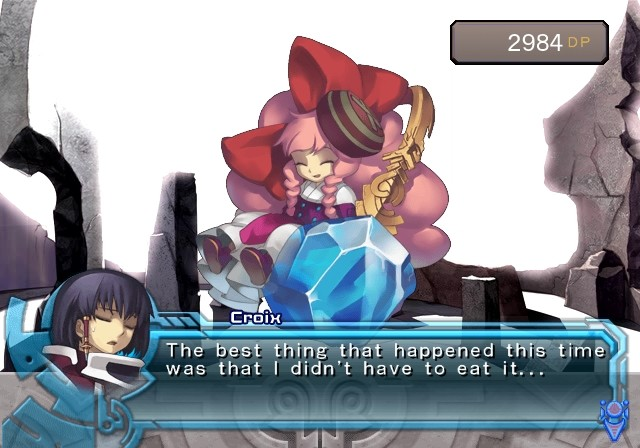

Jacqli Cosmosphere
Ending Gate · Keep Heroines Uncommitted
Accepting Paradigm Shift for either ルカ or クローシェ permanently locks ジャクリ at Lv.5. Stop both at Lv.5 entry, trigger Jacqli's Lv.5 Paradigm Shift after Phase 3 recruitment, and pursue her Lv.7-C/7-P and Lv.8-2 routes with リドゥチャーム items.

Cosmosphere Levels Lv.1 – Lv.9 Checklist
-
Lv.1 派遣戦闘員. Opens immediately upon Phase 3 recruitment. Awards 長尺 costume and signature burst magic.
-
Lv.2 人ギョウと人ゲン. Comedy-action scenario unlocking スピリガンナー maid-gunner outfit.
-
Lv.3 渡さない襟巻の心理学. Focuses on pride and personal attachment. Unlocks イモガール costume.
-
Lv.4 離ればなれの逢瀬. Rewards サザンクロス outfit and prepares her Paradigm Shift threshold.
-
Lv.5 刃の見つめる先. Confirming Jacqli's パラダイムシフト commits you to her Ending once neither main heroine progressed to Lv.6. Unlocks OBOT.
-
Lv.6 心の破片. Jacqli Route exclusive. Explores deep isolated memories and rewards 淑羽織.
-
Lv.7 罪〜クライム〜 & 罰〜パニシュメント〜. Two mirrored routes (C and P) addressing past sins in ソル・シエール. Complete Lv.7-C first to claim ミュロス, then revisit via リドゥチャーム.
-
Lv.8 脱胎 (Lv.8-1 & Lv.8-2). Clear both Lv.8-1 and Lv.8-2 sub-branches to collect ピュアリチュアル and prepare Lv.9 entry.
-
Lv.9 愛の刺し方. Locks Jacqli's true ending bond, awards ダークローズ dress, and unlocks her ultimate 合体詩魔法 potential including ファンタスマゴリア.